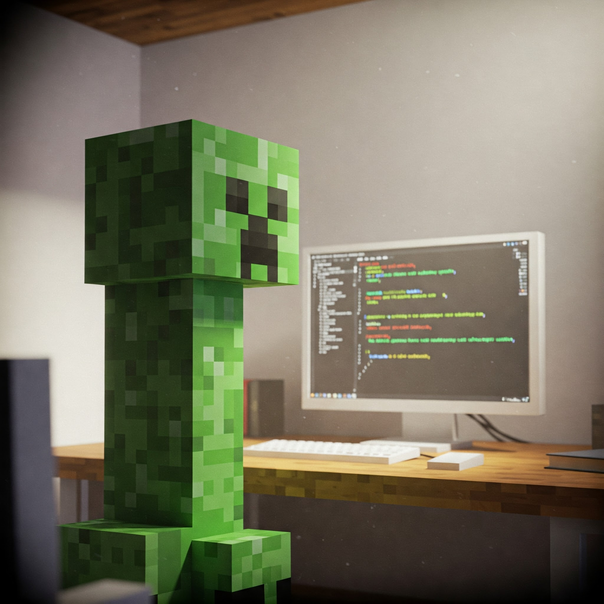

Odin Recipes
Welcome to Odin Recipes! I'm its-namami, the creator of this little corner of the web dedicated to sharing some delicious dishes.
While I'm quite serious about programming and enjoy the challenges it brings, I also had a lot of fun putting this recipe site together as part of The Odin Project. Feel free to browse the recipes below and maybe even try your hand at cooking something new!
Explore My Recipes
- Tomato Spaghetti - A classic Italian favorite.
- Japanese Curry - A comforting and flavorful dish.